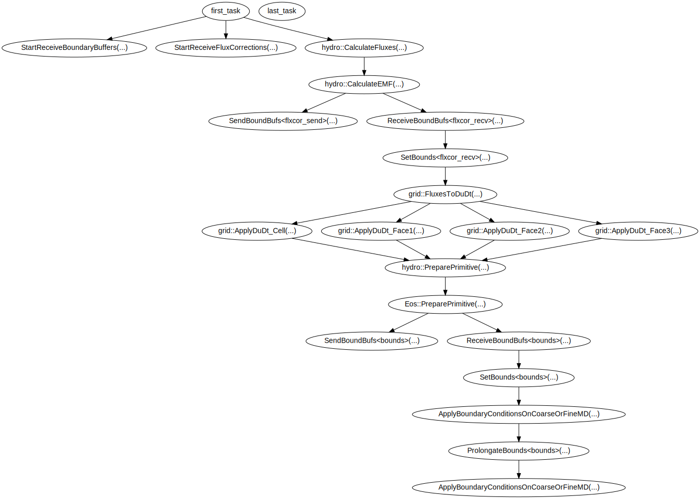

Driver Unit
The KamayanDriver implements the parthenon MultiStageDriver, and so works with any of the
provided multistage integrators. Kamayan allows any KamayanUnit to hook into the main evolution
loop through the provided callback interfaces. The primary evolution hooks can be classified as
- Flux-based multi-stage operators
- Non-flux multi-stage operators
- Split operators
For multi-stage integrators we require our primary independent variables to be replicated
across buffers corresponding to the various stages. Parthenon buffers will only duplicate
fields marked Metadata::Independent across these various buffers, while all others will
point to the same data.
// conserved variables are Independent in each multi-stage buffer
AddFields(typename hydro_vars::WithFlux(), pkg,
{CENTER_FLAGS(Metadata::Independent, Metadata::WithFluxes)});
// primitive variables reference same data on each multi-stage buffer
AddFields(typename hydro_vars::NonFlux(), pkg, {CENTER_FLAGS()});
RK-Stages
The multi-stage integrator is based of a method-of-lines approach where the temporal discretization at each point in space is determined from the state of the system at the current time, resulting in an ODE system of equations for each point on the grid.
The KamayanDriver will accumulate over all the units that have been
registered to it's UnitCollection. The driver will call into each unit's
AddTasksOneStep to accumulate the right hand side into a provided MeshData
container dudt, and the driver handles apply the changes to the solution.
Flux-based Tasks
For the case that terms in can be expressed as a difference of
fluxes then it can be advantageous to have the driver accumulate the fluxes
over all the units that provide a callback for AddFluxTasks.
The driver will then take care of calling into the parthenon routines for flux correction at block and fine-coarse boundaries.
Tasks

Tasks from a final RK stage, with operator split tasks.
The KamayanDriver uses parthenon's taksing infrastructure to build out the
execution for the components making up an evolution cycle.
It is helpful to add named labels when registering tasks into the
TaskLists, as that is how the driver can generate the above task graph.
get_fluxes = tl.AddTask(
prev, "hydro::CalculateFluxes",
[](MeshData *md, Config *cfg) {
return Dispatcher<CalculateFluxesNested>(PARTHENON_AUTO_LABEL, cfg).execute(md);
},
md, cfg.get());
The UnitCollection holds all the various KamayanUnits as a std::map and so
can not guarantee the order of execution. Instead the order that tasks
are added can be specified with the various lists owned by the UnitCollection,
// list out order of units that should be called during
// RK stages & for operator splitting
unit_collection.rk_fluxes = {"hydro"};
Parameters
| Paramter | Type | Default | Allowed | Description |
|---|---|---|---|---|
| <parthenon/time> | ||||
| dt_ceil | Real | 1.79769e+308 | The maximum allowed timestep. | |
| dt_factor | Real | 2.00000e+00 | The maximum allowed relative increase of the timestep over the previous value. | |
| dt_floor | Real | 2.22507e-308 | The minimum allowed timestep. | |
| dt_force | Real | -1.79769e+308 | Force the timestep to this value, ignoring all other conditions. | |
| dt_init | Real | 1.79769e+308 | The maximum allowed timestep during the first cycle. | |
| dt_init_force | Boolean | true | If set to true, force the first cycle's timestep to the value given by dt_init. | |
| dt_max | Real | 1.79769e+308 | If the timestep falls above dt_max for dt_max_cycle_limit cycles, Parthenon fatals. | |
| dt_max_cycle_limit | Integer | 1 | The maximum number of cycles the timestep an be above dt_max. | |
| dt_min | Real | -1.79769e+308 | If the timestep falls below dt_min for dt_min_cycle_limit cycles, Parthenon fatals. | |
| dt_min_cycle_limit | Integer | 10 | The maximum number of cycles the timestep can be below dt_min. | |
| dt_user | Real | 1.79769e+308 | Set a global timestep limit. | |
| integrator | String | rk2 | [ rk1, rk2, rk3, ] | Which multi-stage Runge-Kutta method to use |
| ncrecv_bdry_buf_timeout_sec | Real | -1.00000e+00 | Timeout in seconds for the ReceiveBoundaryBuffers tasks. Disabed (negative) by default. Typically no need in production runs. Useful for debugging MPI calls. | |
| ncycle_out | Integer | 1 | Number of cycles between short diagnostic output to standard out containing, e.g., current time, dt, zone-update/wsec. Default: 1 (i.e, every cycle). | |
| ncycle_out_mesh | Integer | 0 | Number of cycles between printing the mesh structure to standard out. Use a negative number to also print every time the mesh was modified. Default: 0 (i.e, off). | |
| nlim | Integer | -1 | Stop criterion on total number of steps taken. Ignored if < 0. | |
| perf_cycle_offset | Integer | 0 | Skip the first N cycles when calculating the final performance (e.g., zone-cycles/wall_second). Allows to hide the initialization overhead in Parthenon. | |
| tlim | Real | 1.79769e+308 | Stop criterion on simulation time. |